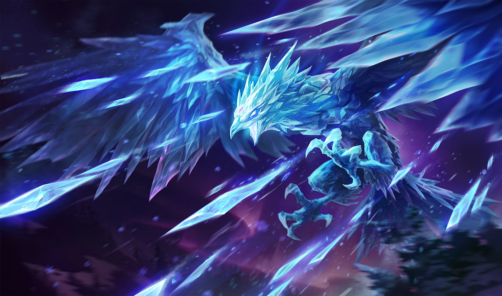

MAGICAL WEAPONS SINCE ITERATION 5.13 — A STATISTICAL REPORT.
5.13 Changes
Not long ago, in iteration 5.13 of the Rift, changes were put in place that hoped to make a wider range of magical weapons (Ability Power items) enticing for magic users. The changes centered around the Needlessly Large Rod (NLR), a powerful and expensive component to the AP items that grant the highest amounts of raw magical power.

By making the NLR less expensive and reducing its AP bonus, Rift's Iterating Optimization Team (RIOT) hoped to make its high-power upgrades less obligatory; also to this end, other AP items with a focus on utility and special effects, such as Rylai's Crystal Scepter and Liandry's Torment, had their AP increased, among other changes.
How Did Champions Adapt?
Since 5.11, sufficient battles have been waged on the Rift for our champions to adapt to these item alterations. Did mages change the way they build up their power? Which items rose or fell in popularity? Should the Needlessly Large Rod be renamed the Somewhat Unnecessarily Large Rod? By looking at some statistics, one can look for changes in item usage and popularity.
Below is a table of statistics compiled using Rift matches before and after the AP item changes. The first value is the stat for version 5.14, and the second value in parentheses is the difference between 5.11 and 5.14. Due to advances in table technology, specific tables can be conjured up for a particular champion; normal and ranked games can be included or excluded as well.
5.14 AP Item Stats Table
Normal RankedPick Rate: The percentage of champions who built the item, from the champions who built any of the above AP items. This is a pick rate in the context of mages: a 50% rate for a champion means that, when they go for AP, the champion picks up the item half the time. This better captures the popularity of AP items relative to each other rather than, say, the popularity of an AP build versus AD.
Sell Rate: The percentage of champions who sold the item after buying it. This can be a measure of retention and whether or not champions tend to trade away an item for something else, but it can also be a measure of how circumstantial an item is.
Mean Build Time: The average time at which champions acquired the item, as measured by the game clock. This is a measure of how quickly items are built in an absolute sense. When items become cheaper or more popular, these times tend to decrease.
Mean Priority Score: The average priority score of the item, which is a measure between 1 (always built first) and 0 (always built last). This is a measure of how quickly items are built relative to each other; items with high scores tend to be a core part of builds. This score is invalid for component items that still upgrade.
For more details about how these statistics were gathered, please refer to the explanation material for this article.